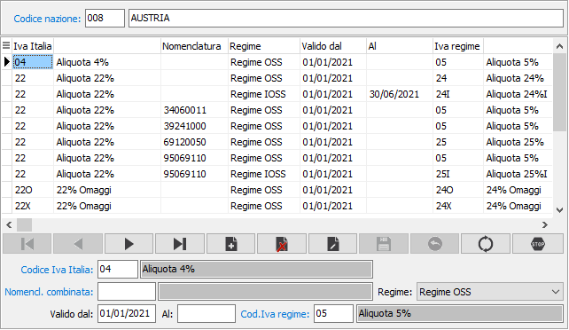
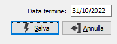

Codici Iva per nazioni UE
La procedura consente di effettuare la manutenzione per la tabella relativa ad i codici Iva per nazione; l’accesso alla procedura è vincolato al fatto che sia presente almeno una delle date di inizio adesione.
Nella parte alta della finestra è presente la nazione che dovrà essere UE e non l’Italia; sul codice è attiva la funzione di ricerca (F9) sulla tabella nazioni.
Nella parte bassa della finestra è possibile inserire le aliquote Iva italiane e le relative aliquote corrispondenti per la nazione in uso; l'aliquota Iva italia non deve essere OSS/IOSS; il campo Regime, se non si aderisce ad entrambi i regimi, non sarà modificabile e sarà selezionato in automatico.
Una aliquota OSS/IOSS non può essere associata a nazioni differenti. Al momento del salvataggio di una associazione senza data di fine validità, viene controllato se è presente un periodo precedente sempre senza data di fine validità; se presente sarà chiuso un giorno prima della data inizio validità del periodo che si sta inserendo; quando si cancella un periodo senza data di fine validità ed è presente un periodo precedente chiuso ad una determinata data viene richiesto se riaprirlo riportando la data di fine validità vuota. Se il codice Iva OSS/IOSS è presente nei movimenti Iva non sarà possibile cancellarlo.

È presente un pulsante termina che consente, tramite la finestra mostrata, di chiudere ad una data che viene richiesta il periodo su cui si è posizionati.
